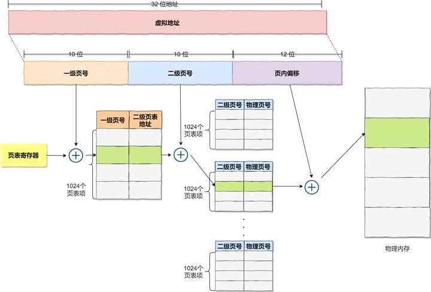

linux 内存模型
reference:
现在的 Linux 内核和 Linux 2.6 的内核有多大区别？ - larmbr宇的回答 - 知乎
linux内存管理（详解）
20 张图揭开「内存管理」的迷雾，瞬间豁然开朗 - 小林coding的文章 - 知乎
浅谈Linux内存管理 - lecury的文章 - 知乎
概述：内存管理子系统，作为 kernel 核心中的核心，是承接所有系统活动的舞台，也是 Linux kernel 中最为庞杂的子系统, 没有之一．截止 4.2 版本，内存管理子系统(下简称 MM)所有平台独立的核心代码(C文件和头文件)达到11万6千多行，这还不包括平台相关的 C 代码, 及一些汇编代码；与之相比，调度子系统的平台独立的核心代码才2万8千多行。
以下未作说明，都是以32bit linux 内存模型！
相关术语(term)
- 储存介质：保存数据或者程序的物质,不同层次有着不同的速度和容量
- 寄存器：CPU提供的，读写ns级别，容量字节级别。
- CPU缓存：CPU和CPU间的缓存，读写10ns级别，容量较大一些，百到千节。
- 主存：动态内存，读写100ns级别，容量GB级别。
- 外部存储介质：磁盘、SSD，读写ms级别，容量可扩展到TB级别。
其中 L1d 和 L1i 都是CPU内部的cache，L1d 是数据cache。L1i 是指令缓存。L2是CPU内部的，不区分指令和数据的。由于现代PC有多个CPU，L3缓存多个核心共用一个。
- 物理地址(Physical Address): 这就是内存 DIMM 上的一个一个存储区间的物理编址，以字节为单位．
利用MMU 内存管理单元（Memory Management Unit ) 对虚拟地址分段和分页（段页式）地址转换，关于分段和分页的具体流程，可以参考任何一本计算机组成原理教材描述。
- 虚拟地址(Virtual Address): 技术上来讲，用户或内核用到的地址就是虚拟地址，需要 MMU (内存管理单元，一个用于支持虚拟内存的 CPU 片内机构) 翻译为物理地址．在 CPU 的技术规范中，可能还有虚拟地址和线性地址的区别，但在这不重要．
这样做带来了以下优点：
- 避免用户直接访问物理内存地址，防止一些破坏性操作，保护操作系统.
- 每个进程都被分配了4GB的虚拟内存，用户程序可使用比实际物理内存更大的地址空间.
4GB （linux 32bit）的进程虚拟地址空间被分成两部分：「用户空间」和「内核空间」

- 内存分段(Segmentation): 程序是由若干个逻辑分段组成的，如可由代码分段、数据分段、栈段、堆段组成。不同的段是有不同的属性的，所以就用分段（Segmentation）的形式把这些段分离出来。
- 内存页/页面(page): 现代虚拟内存管理／分配的单位是一个物理内存页, 大小是 4096(4KB) 字节. 当然，很多 CPU 提供多种尺寸的物理内存页支持(如 X86, 除了4KB, 还有 2MB, 1GB页支持），但 Linux 内核中的默认页尺寸就是 4KB．内核初始化过程中，会对每个物理内存页分配一个描述符(struct page), 后文描述中可能多次提到这个描述符，它是 MM 内部，也是 MM 与其他子系统交互的一个接口描述符．
- 页表(page table): 从一个虚拟地址翻译为物理地址时，其实就是从一个稀疏哈希表中查找的过程，这个哈希表就是页表．
- 交换(swap): 内存紧缺时, MM 可能会把一些暂时不用的内存页转移到访问速度较慢的次级存储设备中(如磁盘, SSD), 以腾出空间,这个操作叫交换, 相应的存储设备叫交换设备或交换空间.
- 文件缓存页(PageCache Page): 内核会利用空闲的内存, 事先读入一些文件页, 以期不久的将来会用到, 从而避免在要使用时再去启动缓慢的外设(如磁盘)读入操作. 这些有后备存储介质的页面, 可以在内存紧缺时轻松丢弃, 等到需要时再次从外设读入. 典型的代表有可执行代码, 文件系统里的文件.
- 匿名页(Anonymous Page): 这种页面的内容都是在内存中建立的,没有后备的外设, 这些页面在回收时不能简单的丢弃, 需要写入到交换设备中. 典型的代表有进程的栈, 使用 malloc() 分配的内存所在的页等 .
- 内存回收:释放可回收的物理内存页的过程，被称之为回收，可以同步或者异步的回收操作。 根据页面的使用情况，Linux内存管理对其进行了不同的处理，可以随时释放的页面，称之为可回收页面，这类页面为：页面缓存或者是匿名内存（被再次交换到硬盘上）大多数情况下，保存内部内核数据并用DMA缓冲区的页面是不能重新被回收的，但是某些情况下，可以回收使用内核数据结构的页面。例如：文件系统元数据的内存缓存，当系统处于内存压力情况下，可以从主存中丢弃它们。
（kswapd） - compaction:将被占用的页面，从内存区域合适的移动，以换取大块的空闲物理页的过程，由
kcompactd守护进程完成.解决内存碎片 - OOM killer:机器上的内存可能会被耗尽，并且内核将无法回收足够的内存用于运行新的程序，为了保存系统的其余部分，内核会调用OOM killer杀掉一些进程，以释放内存。
- NUMA(Non-Uniform Memory Access): 非一致性内存访问．NUMA 概念的引入是为了解决随着 CPU 个数的增长而出现的内存访问瓶颈问题，非一致性内存意为每个 NUMA 节点都有本地内存，提供高访问速度；也可以访问跨节点的内存，但要遭受较大的性能损耗．所以尽管整个系统的内存对任何进程来说都是可见的，但却存在访问速度差异，这一点对内存分配／内存回收都有着非常大的影响．Linux 内核于2.5版本引入对 NUMA的支持.
- NUMA node(NUMA节点)： NUMA 体系下，一个 node 一般是一个CPU socket(一个 socket 里可能有多个核）及它可访问的本地内存的整体．- zone(内存区): 一个 NUMA node 里的物理内存又被分为几个内存区(zone), 一个典型的 node 的内存区划分如下:
可以看到每个node里，随着物理内存地址的增加，典型地分为三个区：
- ZONE_DMA: 这个区的存在有历史原因，古老的
ISA总线外设，它们进行DMA操作时，只能访问内存物理空间低16MB的范围．所以故有这一区，用于给这些设备分配内存时使用．
包含0MB~16MB之间的内存页框，可以由老式基于ISA的设备通过DMA使用，直接映射到内核的地址空间。
- ZONE_NORMAL: 这是 32位 CPU时代产物，很多内核态的内存分配都是在这个区间(用户态内存也可以在这部分分配，但优先在ZONE_HIGH中分配），但这部分的大小一般就只有 896 MiB, 所以比较局限． 64位 CPU 情况下，内存的访问空间增大，这部分空间就增大了很多．关于为何这部分区间这么局限，且内核态内存分配在这个区间，感兴趣的可以看这个回答.
普通内存区域。包含16MB~896MB之间的内存页框，常规页框，直接映射到内核的地址空间。
- ZONE_HIGH: 典型情况下，这个区间覆盖系统所有剩余物理内存．这个区间叫做高端内存区(不是高级的意思，是地址区间高的意思). 这部分主要是用户态和部分内核态内存分配所处的区间．
物理内存划分图：
用户空间和内核空间
在多用户通用操作系统中，为了保证各用户进程以及整个系统的安全性诞生了用户空间和内核空间的概念！

通过这里可以看出：
- 32 位系统的内核空间占用 1G，位于最高处，剩下的 3G 是用户空间；
- 64 位系统的内核空间和用户空间都是 128T，分别占据整个内存空间的最高和最低处，剩下的中间部分是未定义的。
区别：
- 进程在用户态时，只能访问用户空间内存；
- 只有进入内核态后，才可以访问内核空间的内存；
虽然每个进程都各自有独立的虚拟内存，但是每个虚拟内存中的内核地址，其实关联的都是相同的物理内存。这样，进程切换到内核态后，就可以很方便地访问内核空间内存。

用户空间
用户进程能访问的是「用户空间」，每个进程都有自己独立的用户空间，虚拟地址范围从从0x00000000 至 0xBFFFFFFF 总容量3G 。
用户进程通常只能访问用户空间的虚拟地址，只有在执行内陷操作或系统调用时才能访问内核空间。

进程内存模型
进程（执行的程序）占用的用户空间按照「 访问属性一致的地址空间存放在一起 」的原则，划分成 5个不同的内存区域。访问属性指的是“可读、可写、可执行等 。
- 代码段(.text)：代码段是用来存放可执行文件的操作指令，可执行程序在内存中的镜像。代码段需要防止在运行时被非法修改，所以只准许读取操作，它是不可写的。
- 数据段(.data)：数据段用来存放可执行文件中已初始化全局变量，换句话说就是存放程序静态分配的变量和全局变量。
- BSS段(.bass)：BSS段包含了程序中未初始化的全局变量，在内存中 bss 段全部置零。
- 堆(heap)：堆是用于存放进程运行中被动态分配的内存段，它的大小并不固定，可动态扩张或缩减。当进程调用malloc等函数分配内存时，新分配的内存就被动态添加到堆上（堆被扩张）；当利用free等函数释放内存时，被释放的内存从堆中被剔除（堆被缩减）
- 文件映射段，包括动态库、共享内存等，从低地址开始向上增长（跟硬件和内核版本有关）
- 栈 stack: 栈是用户存放程序临时创建的局部变量，也就是函数中定义的变量（但不包括 static 声明的变量，static意味着在数据段中存放变量）。除此以外，在函数被调用时，其参数也会被压入发起调用的进程栈中，并且待到调用结束后，函数的返回值也会被存放回栈中。由于栈的先进先出特点，所以栈特别方便用来保存/恢复调用现场。从这个意义上讲，我们可以把堆栈看成一个寄存、交换临时数据的内存区。
上述几种内存区域中数据段、BSS 段、堆通常是被连续存储在内存中，在位置上是连续的，而代码段和栈往往会被独立存放。堆和栈两个区域在 i386 体系结构中栈向下扩展、堆向上扩展，相对而生。

使用size查看编译后程序的各个内存区域大小
1 | size /usr/local/sbin/ssh |
内核空间
x86 32位系统里，Linux 内核地址空间是指虚拟地址从 0xC0000000 开始到 0xFFFFFFFF 为止的高端内存地址空间，总计 1G 的容量， 包括了内核镜像、物理页面表、驱动程序等运行在内核空间 。
直接映射区
直接映射区 Direct Memory Region：从内核空间起始地址开始，最大896M的内核空间地址区间，为直接内存映射区。
直接映射区的896MB的「线性地址」直接与「物理地址」的前896MB进行映射，也就是说线性地址和分配的物理地址都是连续的。内核地址空间的线性地址0xC0000001所对应的物理地址为0x00000001，它们之间相差一个偏移量PAGE_OFFSET = 0xC0000000
该区域的线性地址和物理地址存在线性转换关系「线性地址 = PAGE_OFFSET + 物理地址」也可以用 virt_to_phys()函数将内核虚拟空间中的线性地址转化为物理地址。
高端内存线性地址空间
内核空间线性地址从 896M 到 1G 的区间，容量 128MB 的地址区间是高端内存线性地址空间，为什么叫高端内存线性地址空间？下面给你解释一下：
前面已经说过，内核空间的总大小 1GB，从内核空间起始地址开始的 896MB 的线性地址可以直接映射到物理地址大小为 896MB 的地址区间。
退一万步，即使内核空间的1GB线性地址都映射到物理地址，那也最多只能寻址 1GB 大小的物理内存地址范围。
所以，内核空间拿出了最后的 128M 地址区间，划分成下面三个高端内存映射区，以达到对整个物理地址范围的寻址。而在 64 位的系统上就不存在这样的问题了，因为可用的线性地址空间远大于可安装的内存。
动态内存映射区
vmalloc Region 该区域由内核函数vmalloc来分配，特点是：线性空间连续，但是对应的物理地址空间不一定连续。vmalloc 分配的线性地址所对应的物理页可能处于低端内存，也可能处于高端内存。
永久内存映射区
Persistent Kernel Mapping Region 该区域可访问高端内存。访问方法是使用 alloc_page (_GFP_HIGHMEM) 分配高端内存页或者使用kmap函数将分配到的高端内存映射到该区域。
固定映射区
Fixing kernel Mapping Region 该区域和 4G 的顶端只有 4k 的隔离带，其每个地址项都服务于特定的用途，如 ACPI_BASE 等。
内核空间物理内存映射：
内存全景图
内存数据结构
要让内核管理系统中的虚拟内存，必然要从中抽象出内存管理数据结构，内存管理操作如「分配、释放等」都基于这些数据结构操作，这里列举两个管理虚拟内存区域的数据结构。
用户空间内存数据结构
在前面「用户空间」章节我们提到，Linux进程可以划分为 5 个不同的内存区域，分别是：代码段、数据段、BSS、堆、栈，内核管理这些区域的方式是，将这些内存区域抽象成vm_area_struct的内存管理对象。
vm_area_struct是描述进程地址空间的基本管理单元，一个进程往往需要多个vm_area_struct来描述它的用户空间虚拟地址，需要使用「链表」和「红黑树」来组织各个 vm_area_struct 。
链表用于需要遍历全部节点的时候用，而红黑树适用于在地址空间中定位特定内存区域。内核为了内存区域上的各种不同操作都能获得高性能，所以同时使用了这两种数据结构。
用户空间进程的地址管理模型：

内核空间动态分配内存数据结构
在内核空间章节我们提到过「动态内存映射区」，该区域由内核函数vmalloc来分配，特点是：线性空间连续，但是对应的物理地址空间不一定连续。vmalloc 分配的线性地址所对应的物理页可能处于低端内存，也可能处于高端内存。
vmalloc 分配的地址则限于vmalloc_start与vmalloc_end之间。每一块vmalloc分配的内核虚拟内存都对应一个vm_struct结构体，不同的内核空间虚拟地址之间有4k大小的防越界空闲区间隔区。
与用户空间的虚拟地址特性一样，这些虚拟地址与物理内存没有简单的映射关系，必须通过内核页表才可转换为物理地址或物理页，它们有可能尚未被映射，当发生缺页时才真正分配物理页面。
动态内存映射

前面分析了 Linux 内存管理机制，下面深入学习物理内存管理和虚拟内存分配。
物理内存管理
x86架构内存映射
早期 Intel 的处理器从 80286 开始使用的是段式内存管理。但是很快发现，光有段式内存管理而没有页式内存管理是不够的，这会使它的 X86 系列会失去市场的竞争力。因此，在不久以后的 80386 中就实现了对页式内存管理。也就是说，80386 除了完成并完善从 80286 开始的段式内存管理的同时还实现了页式内存管理。
但是这个 80386 的页式内存管理设计时，没有绕开段式内存管理，而是建立在段式内存管理的基础上，这就意味着，页式内存管理的作用是在由段式内存管理所映射而成的地址上再加上一层地址映射。
由于此时由段式内存管理映射而成的地址不再是“物理地址”了，Intel 就称之为“线性地址”（也称虚拟地址）。于是，段式内存管理先将逻辑地址映射成线性地址，然后再由页式内存管理将线性地址映射成物理地址。

这里说明下逻辑地址和线性地址：
- 程序所使用的地址，通常是没被段式内存管理映射的地址，称为逻辑地址；
- 通过段式内存管理映射的地址，称为线性地址，也叫虚拟地址；
逻辑地址是「段式内存管理」转换前的地址，线性地址则是「页式内存管理」转换前的地址。
在了解linux内存管理之前，我们要先熟悉以下内容。
## 分段和分页机制
在Linux系统中通过分段和分页机制，把物理内存划分 4K 大小的内存页
Page（也称作页框Page Frame），物理内存的分配和回收都是基于内存页进行，把物理内存分页管理的好处大大的。假如系统请求小块内存，可以预先分配一页给它，避免了反复的申请和释放小块内存带来频繁的系统开销。
### 分段（段映射）说明
程序是由若干个逻辑分段组成的，如可由代码分段、数据分段、栈段、堆段组成。不同的段是有不同的属性的，所以就用分段（Segmentation）的形式把这些段分离出来。
分段机制下的虚拟地址由两部分组成，段选择子和段内偏移量。

- 段选择子就保存在段寄存器里面。段选择子里面最重要的是段号，用作段表的索引。段表里面保存的是这个段的基地址、段的界限和特权等级等。
- 虚拟地址中的段内偏移量应该位于 0 和段界限之间，如果段内偏移量是合法的，就将段基地址加上段内偏移量得到物理内存地址。
在上面，知道了虚拟地址是通过段表与物理地址进行映射的，分段机制会把程序的虚拟地址分成 4 个段，每个段在段表中有一个项，在这一项找到段的基地址，再加上偏移量，于是就能找到物理内存中的地址，如下图：
如果要访问段 3 中偏移量 500 的虚拟地址，我们可以计算出物理地址为，段 3 基地址 7000 + 偏移量 500 = 7500。
分页说明
页表实际上存储在 CPU 的内存管理单元 （MMU）中，于是 CPU 就可以直接通过 MMU（稀疏表格），找出要实际要访问的物理内存地址。
而当进程访问的虚拟地址在页表中查不到时，系统会产生一个缺页异常，进入系统内核空间分配物理内存、更新进程页表，最后再返回用户空间，恢复进程的运行。
分页是怎么解决分段的内存碎片、内存交换效率低的问题？
由于内存空间都是预先划分好的，也就不会像分段会产生间隙非常小的内存，这正是分段会产生内存碎片的原因。而采用了分页，那么释放的内存都是以页为单位释放的，也就不会产生无法给进程使用的小内存。
如果内存空间不够，操作系统会把其他正在运行的进程中的「最近没被使用」的内存页面给释放掉，也就是暂时写在硬盘上，称为换出（Swap Out）。一旦需要的时候，再加载进来，称为换入（Swap In）。所以，一次性写入磁盘的也只有少数的一个页或者几个页，不会花太多时间，内存交换的效率就相对比较高。

虚拟地址和物理地址是如何映射
在分页机制下，虚拟地址分为两部分，页号和页内偏移。页号作为页表的索引，页表包含物理页每页所在物理内存的基地址，这个基地址与页内偏移的组合就形成了物理内存地址，见下图。

总结一下，对于一个内存地址转换，其实就是这样三个步骤：
- 把虚拟内存地址，切分成页号和偏移量；
- 根据页号，从页表里面，查询对应的物理页号；
- 直接拿物理页号，加上前面的偏移量，就得到了物理内存地址。

页表存在的问题
因为操作系统是可以同时运行非常多的进程的，那这不就意味着页表会非常的庞大。在 32 位的环境下，虚拟地址空间共有 4GB，假设一个页的大小是 4KB（2^12），那么就需要大约 100 万 （2^20） 个页，每个「页表项」需要 4 个字节大小来存储，那么整个 4GB 空间的映射就需要有 4MB 的内存来存储页表。
这 4MB 大小的页表，看起来也不是很大。但是要知道每个进程都是有自己的虚拟地址空间的，也就说都有自己的页表。
那么，100 个进程的话，就需要 400MB 的内存来存储页表，这是非常大的内存了，更别说 64 位的环境了。
多级页表
要解决上面的问题，就需要采用的是一种叫作多级页表（Multi-Level Page Table）的解决方案。
在前面我们知道了，对于单页表的实现方式，在 32 位和页大小 4KB 的环境下，一个进程的页表需要装下 100 多万个「页表项」，并且每个页表项是占用 4 字节大小的，于是相当于每个页表需占用 4MB 大小的空间。
我们把这个 100 多万个「页表项」的单级页表再分页，将页表（一级页表）分为 1024 个页表（二级页表），每个表（二级页表）中包含 1024 个「页表项」，形成二级分页。如下图所示：

需要注意的是，我们不会把所有应用的虚拟地址页数据全部映射到页表中，而只会把需要的页映射上去，如果需要映射的地址不存在页表中则会触发缺页异常。
每个进程都有 4GB 的虚拟地址空间，而显然对于大多数程序来说，其使用到的空间远未达到 4GB，因为会存在部分对应的页表项都是空的，根本没有分配，对于已分配的页表项，如果存在最近一定时间未访问的页表，在物理内存紧张的情况下，操作系统会将页面换出到硬盘，也就是说不会占用物理内存。
一级页表就可以覆盖整个 4GB 虚拟地址空间，但如果某个一级页表的页表项没有被用到，也就不需要创建这个页表项对应的二级页表了，即可以在需要时才创建二级页表。做个简单的计算，假设只有 20% 的一级页表项被用到了，那么页表占用的内存空间就只有 4KB（一级页表） + 20% * 4MB（二级页表）= 0.804MB，这对比单级页表的 4MB 是不是一个巨大的节约？
那么为什么不分级的页表就做不到这样节约内存呢？我们从页表的性质来看，保存在内存中的页表承担的职责是将虚拟地址翻译成物理地址。假如虚拟地址在页表中找不到对应的页表项，计算机系统就不能工作了。所以页表一定要覆盖全部虚拟地址空间，不分级的页表就需要有 100 多万个页表项来映射，而二级分页则只需要 1024 个页表项（此时一级页表覆盖到了全部虚拟地址空间，二级页表在需要时创建）。
我们把二级分页再推广到多级页表，就会发现页表占用的内存空间更少了，这一切都要归功于对局部性原理的充分应用。对于 64 位的系统，两级分页肯定不够了，就变成了四级目录，分别是：
- 全局页目录项 PGD（Page Global Directory）
- 上层页目录项 PUD（Page Upper Directory）
- 中间页目录项 PMD（Page Middle Directory）
- 页表项 PTE（Page Table Entry）

TLB
多级页表虽然解决了空间上的问题，但是虚拟地址到物理地址的转换就多了几道转换的工序，这显然就降低了这俩地址转换的速度，也就是带来了时间上的开销。
程序是有局部性的，即在一段时间内，整个程序的执行仅限于程序中的某一部分。相应地，执行所访问的存储空间也局限于某个内存区域。
我们就可以利用这一特性，把最常访问的几个页表项存储到访问速度更快的硬件，于是计算机科学家们，就在 CPU 芯片中，加入了一个专门存放程序最常访问的页表项的 Cache，这个 Cache 就是 TLB（Translation Lookaside Buffer） ，通常称为页表缓存、转址旁路缓存、快表等。
在 CPU 芯片里面，封装了内存管理单元（Memory Management Unit）芯片，它用来完成地址转换和 TLB 的访问与交互。
有了 TLB 后，那么 CPU 在寻址时，会先查 TLB，如果没找到，才会继续查常规的页表。
TLB流程

TLB 的命中率其实是很高的，因为程序最常访问的页就那么几个。
段页式内存管理
内存分段和内存分页并不是对立的，它们是可以组合起来在同一个系统中使用的，那么组合起来后，通常称为段页式内存管理。
段页式内存管理实现的方式：
- 先将程序划分为多个有逻辑意义的段，也就是前面提到的分段机制；
- 接着再把每个段划分为多个页，也就是对分段划分出来的连续空间，再划分固定大小的页；
这样，地址结构就由段号、段内页号和页内位移三部分组成。
用于段页式地址变换的数据结构是每一个程序一张段表，每个段又建立一张页表，段表中的地址是页表的起始地址，而页表中的地址则为某页的物理页号，如图所示：

段页式地址变换中要得到物理地址须经过三次内存访问：
- 第一次访问段表，得到页表起始地址；
- 第二次访问页表，得到物理页号；
- 第三次将物理页号与页内位移组合，得到物理地址。
可用软、硬件相结合的方法实现段页式地址变换，这样虽然增加了硬件成本和系统开销，但提高了内存的利用率。
Linux 内存管理
在了解了分页和分段的基本内容之后，我们开始了解Linux 内存管理机制。
Linux 内存主要采用的是页式内存管理，但同时也不可避免地涉及了段机制。
这主要是上面 Intel 处理器发展历史导致的，因为 Intel X86 CPU 一律对程序中使用的地址先进行段式映射，然后才能进行页式映射。既然 CPU 的硬件结构是这样，Linux 内核也只好服从 Intel 的选择。
但是事实上，Linux 内核所采取的办法是使段式映射的过程实际上不起什么作用。也就是说，“上有政策，下有对策”，若惹不起就躲着走。
Linux 系统中的每个段都是从 0 地址开始的整个 4GB 虚拟空间（32 位环境下），也就是所有的段的起始地址都是一样的。这意味着，Linux 系统中的代码，包括操作系统本身的代码和应用程序代码，所面对的地址空间都是线性地址空间（虚拟地址），这种做法相当于屏蔽了处理器中的逻辑地址概念，段只被用于访问控制和内存保护。
内存模型见[用户空间]章节！
物理页管理面临问题
假如系统需要大块内存，则可以用多页内存拼凑，而不必要求大块连续内存。你看不管内存大小都能收放自如，分页机制多么完美的解决方案！
But，理想很丰满，现实很骨感。如果就直接这样把内存分页使用，不再加额外的管理还是存在一些问题，下面我们来看下，系统在多次分配和释放物理页的时候会遇到哪些问题。
物理内存页分配会出现外部碎片和内部碎片问题，所谓的「内部」和「外部」是针对「页框内外」而言，一个页框内的内存碎片是内部碎片，多个页框间的碎片是外部碎片。
外部碎片
当需要分配大块内存的时候，要用好几页组合起来才够，而系统分配物理内存页的时候会尽量分配连续的内存页面，频繁的分配与回收物理页导致大量的小块内存夹杂在已分配页面中间，形成外部碎片，举个例子：
解决方案：内存交换暂时把不需要的内存放到磁盘上。（即内存交换空间，在 Linux 系统里，也就是我们常看到的 Swap 空间，这块空间是从硬盘划分出来的，用于内存与硬盘的空间交换。）
内部碎片
物理内存是按页来分配的，这样当实际只需要很小内存的时候，也会分配至少是 4K 大小的页面，而内核中有很多需要以字节为单位分配内存的场景，这样本来只想要几个字节而已却不得不分配一页内存，除去用掉的字节剩下的就形成了内部碎片。

页面管理算法
方法总比困难多，因为存在上面的这些问题，聪明的程序员灵机一动，引入了页面管理算法来解决上述的碎片问题。
Buddy（伙伴）分配算法
Linux 内核引入了伙伴系统算法（Buddy system），什么意思呢？就是把相同大小的页框块用链表串起来，页框块就像手拉手的好伙伴，也是这个算法名字的由来。
具体的，所有的空闲页框分组为11个块链表，每个块链表分别包含大小为1，2，4，8，16，32，64，128，256，512和1024个连续页框的页框块。最大可以申请1024个连续页框，对应4MB大小的连续内存。

因为任何正整数都可以由 2^n 的和组成，所以总能找到合适大小的内存块分配出去，减少了外部碎片产生 。
分配实例
比如：我需要申请4个页框，但是长度为4个连续页框块链表没有空闲的页框块，伙伴系统会从连续8个页框块的链表获取一个，并将其拆分为两个连续4个页框块，取其中一个，另外一个放入连续4个页框块的空闲链表中。释放的时候会检查，释放的这几个页框前后的页框是否空闲，能否组成下一级长度的块。
命令查看1
2
3cat /proc/buddyinfo
Node 0, zone DMA 1331 1396 1353 93 122 79 27 10 0 0 0
Node 0, zone HighMem 45 24 13 12 3 0 0 0 0 0 0
slab分配器
看到这里你可能会想，有了伙伴系统这下总可以管理好物理内存了吧？不，还不够，否则就没有slab分配器什么事了。
那什么是slab分配器呢？
一般来说，内核对象的生命周期是这样的：分配内存-初始化-释放内存，内核中有大量的小对象，比如文件描述结构对象、任务描述结构对象，如果按照伙伴系统按页分配和释放内存，对小对象频繁的执行「分配内存-初始化-释放内存」会非常消耗性能。
伙伴系统分配出去的内存还是以页框为单位，而对于内核的很多场景都是分配小片内存，远用不到一页内存大小的空间。slab分配器，「通过将内存按使用对象不同再划分成不同大小的空间」，应用于内核对象的缓存。
伙伴系统和slab不是二选一的关系，slab 内存分配器是对伙伴分配算法的补充。
大白话说原理
对于每个内核中的相同类型的对象，如：task_struct、file_struct 等需要重复使用的小型内核数据对象，都会有个 slab 缓存池，缓存住大量常用的「已经初始化」的对象，每当要申请这种类型的对象时，就从缓存池的slab 列表中分配一个出去；而当要释放时，将其重新保存在该列表中，而不是直接返回给伙伴系统，从而避免内部碎片，同时也大大提高了内存分配性能。
主要优点
- slab 内存管理基于内核小对象，不用每次都分配一页内存，充分利用内存空间，避免内部碎片。
- slab 对内核中频繁创建和释放的小对象做缓存，重复利用一些相同的对象，减少内存分配次数。
数据结构
kmem_cache 是一个cache_chain 的链表组成节点，代表的是一个内核中的相同类型的「对象高速缓存」，每个 kmem_cache 通常是一段连续的内存块，包含了三种类型的 slabs 链表：
slabs_full(完全分配的 slab 链表)slabs_partial(部分分配的slab 链表)slabs_empty( 没有被分配对象的slab 链表)
kmem_cache 中有个重要的结构体 kmem_list3 包含了以上三个数据结构的声明。
slab 是 slab 分配器的最小单位，在实现上一个 slab 由一个或多个连续的物理页组成（通常只有一页）。单个slab可以在 slab 链表之间移动，例如如果一个「半满slabs_partial链表」被分配了对象后变满了，就要从 slabs_partial 中删除，同时插入到「全满slabs_full链表」中去。内核slab对象的分配过程是这样的：
- 如果slabs_partial链表还有未分配的空间，分配对象，若分配之后变满，移动 slab 到slabs_full 链表
- 如果slabs_partial链表没有未分配的空间，进入下一步
- 如果slabs_empty 链表还有未分配的空间，分配对象，同时移动slab进入slabs_partial链表
- 如果slabs_empty为空，请求伙伴系统分页，创建一个新的空闲slab， 按步骤 3 分配对象
命令查看1
2
3
4
5
6
7
8
9cat /proc/slabinfo #查看系统中slab 信息
# name <active_objs> <num_objs> <objsize> <objperslab> <pagesperslab> : tunables <limit> <batchcount> <sharedfactor> : slabdata <active_slabs> <num_slabs> <sharedavail>
kvm_async_pf 0 0 136 30 1 : tunables 0 0 0 : slabdata 0 0 0
kvm_vcpu 0 0 11328 1 4 : tunables 0 0 0 : slabdata 0 0 0
kvm_mmu_page_header 0 0 168 24 1 : tunables 0 0 0 : slabdata 0 0 0
x86_emulator 0 0 2672 12 8 : tunables 0 0 0 : slabdata 0 0 0
...
slabtop #实时显示内核 slab 内存缓存信息
slab高速缓存的分类
slab高速缓存分为两大类，「通用高速缓存」和「专用高速缓存」。
通用高速缓存
slab 分配器中用 kmem_cache 来描述高速缓存的结构，它本身也需要 slab 分配器对其进行高速缓存。 cache_cache 保存着对「高速缓存描述符的高速缓存」，是一种通用高速缓存，保存在cache_chain 链表中的第一个元素。
另外， slab 分配器所提供的小块连续内存的分配，也是通用高速缓存实现的。通用高速缓存所提供的对象具有几何分布的大小，范围为32到131072字节。内核中提供了 kmalloc() 和 kfree() 两个接口分别进行内存的申请和释放。
专用高速缓存
内核为专用高速缓存的申请和释放提供了一套完整的接口，根据所传入的参数为指定的对象分配slab缓存。
专用高速缓存的申请和释放
kmem_cache_create() 用于对一个指定的对象创建高速缓存。它从 cache_cache 普通高速缓存中为新的专有缓存分配一个高速缓存描述符，并把这个描述符插入到高速缓存描述符形成的 cache_chain 链表中。kmem_cache_destory() 用于撤消和从 cache_chain 链表上删除高速缓存。
slab的申请和释放
slab 数据结构在内核中的定义，如下：
kmem_cache_alloc() 在其参数所指定的高速缓存中分配一个slab，对应的 kmem_cache_free() 在其参数所指定的高速缓存中释放一个slab。
slub分配器
随着大规模多处理器系统和NUMA系统的广泛应用，slab暴露出不足：
- 复杂的队列管理
- 管理数据和队列存储开销较大
- 长时间运行partial队列可能会非常长
- 对NUMA支持非常复杂
改造page结构来削减slab管理结构的开销、每个CPU都有一个本地活动的slab(kmem_cache_cpu)等。
slob分配器
对于小型的嵌入式系统存在一个slab模拟层slob，在这种系统中它更有优势。
虚拟内存分配
前面讨论的都是对物理内存的管理，Linux 通过虚拟内存管理，欺骗了用户程序假装每个程序都有 4G 的虚拟内存寻址空间.
所以我们来研究下虚拟内存的分配，这里包括用户空间虚拟内存和内核空间虚拟内存。
注意，分配的虚拟内存还没有映射到物理内存，只有当访问申请的虚拟内存时，才会发生缺页异常，再通过上面介绍的伙伴系统和 slab 分配器申请物理内存。
用户空间内存分配
malloc
malloc 用于申请用户空间的虚拟内存，当申请小于 128KB 小内存的时，malloc使用 sbrk 或 brk 分配内存；当申请大于 128KB 的内存时，使用 mmap 函数申请内存；
存在问题
由于 brk/sbrk/mmap 属于系统调用，如果每次申请内存都要产生系统调用开销，cpu 在用户态和内核态之间频繁切换，非常影响性能。
而且，堆是从低地址往高地址增长，如果低地址的内存没有被释放，高地址的内存就不能被回收，容易产生内存碎片。
解决方案
因此，malloc采用的是内存池的实现方式，先申请一大块内存，然后将内存分成不同大小的内存块，然后用户申请内存时，直接从内存池中选择一块相近的内存块分配出去。
内核空间内存分配
在讲内核空间内存分配之前，先来回顾一下内核地址空间。kmalloc 和 vmalloc 分别用于分配不同映射区的虚拟内存，看这张内核空间内存映射图：
kmalloc
kmalloc() 分配的虚拟地址范围在内核空间的「直接内存映射区」。
按字节为单位虚拟内存，一般用于分配小块内存，释放内存对应于 kfree ，可以分配连续的物理内存。函数原型在 <linux/kmalloc.h> 中声明，一般情况下在驱动程序中都是调用 kmalloc()` 来给数据结构分配内存 。
还记得前面说的 slab 吗？kmalloc 是基于slab 分配器的 ，同样可以用cat /proc/slabinfo 命令，查看 kmalloc 相关 slab 对象信息，下面的 kmalloc-8、kmalloc-16 等等就是基于slab分配的 kmalloc 高速缓存。1
2
3
4
5
6
7
8
9
10
11
12
13
14
15
kmalloc-8k 94 112 8192 4 8 : tunables 0 0 0 : slabdata 28 28 0
kmalloc-4k 567 608 4096 8 8 : tunables 0 0 0 : slabdata 76 76 0
kmalloc-2k 631 704 2048 16 8 : tunables 0 0 0 : slabdata 44 44 0
kmalloc-1k 2133 2528 1024 16 4 : tunables 0 0 0 : slabdata 158 158 0
kmalloc-512 11806 16016 512 16 2 : tunables 0 0 0 : slabdata 1001 1001 0
kmalloc-256 6204 8576 256 16 1 : tunables 0 0 0 : slabdata 536 536 0
kmalloc-192 7010 13818 192 21 1 : tunables 0 0 0 : slabdata 658 658 0
kmalloc-128 4382 4800 128 32 1 : tunables 0 0 0 : slabdata 150 150 0
kmalloc-96 2688 2688 96 42 1 : tunables 0 0 0 : slabdata 64 64 0
kmalloc-64 9481 10048 64 64 1 : tunables 0 0 0 : slabdata 157 157 0
kmalloc-32 19840 19840 32 128 1 : tunables 0 0 0 : slabdata 155 155 0
kmalloc-16 8704 8704 16 256 1 : tunables 0 0 0 : slabdata 34 34 0
kmalloc-8 7168 7168 8 512 1 : tunables 0 0 0 : slabdata 14 14 0
kmem_cache_node 320 320 64 64 1 : tunables 0 0 0 : slabdata 5 5 0
vmalloc
vmalloc 分配的虚拟地址区间，位于 vmalloc_start 与 vmalloc_end 之间的「动态内存映射区」。
一般用分配大块内存，释放内存对应于 vfree，分配的虚拟内存地址连续，物理地址上不一定连续。函数原型在 <linux/vmalloc.h> 中声明。一般用在为活动的交换区分配数据结构，为某些 I/O 驱动程序分配缓冲区，或为内核模块分配空间。
下面的图总结了上述两种内核空间虚拟内存分配方式。
缺页异常
内存去碎片化
成块回收(Lumpy Reclaim)
2.6.23引入(2007年7月), 3.5移除(2012年7月)这不是一个完整的解决方案, 它只是缓解这一问题.
所谓回收是指 MM 在分配内存遇到内存紧张时, 会把一部分内存页面回收. 而成块回收[14], 就是尝试成块回收目标回收页相邻的页面，以形成一块满足需求的高阶连续页块。这种方法有其局限性，就是成块回收时没有考虑被连带回收的页面可能是“热页”，即被高强度使用的页，这对系统性能是损伤。
基于页面可移动性的页面聚类(Page Clustering by Page Mobility)
2.6.23(2007年7月发布)这个名字是我造的, 有点拗口. 所谓可移动性, 是基于对下列事实的思考: 在去碎片化时，需要移动或回收页面，以腾出连续的物理页面，但可能一颗“老鼠屎就坏了整锅粥”——由于某个页面无法移动或回收，导致整个区域无法组成一个足够大的连续页面块。这种页面通常是内核使用的页面，因为内核使用的页面的地址是直接映射(即物理地址加个偏移就映射到内核空间中)，这种做法不用经过页表翻译，提高了效率，却也在此时成了拦路虎。
长年致力于解决内存碎片化的内存领域黑客 Mel Gorman 观察到这个事实, 在经过28个版本[15]的修改后, 他的解决方案进入内核.
Mel Gorman观察到，所有使用的内存页有三种情形：
- 容易回收的(easily reclaimable): 这种页面可以在系统需要时回收，比如文件缓存页，们可以轻易的丢弃掉而不会有问题(有需要时再从后备文件系统中读取); 又比如一些生命周期短的内核使用的页，如DMA缓存区。
- 难回收的(non-reclaimable): 这种页面得内核主动释放，很难回收，内核使用的很多内存页就归为此类，比如为模块分配的区域，比如一些常驻内存的重要内核结构所占的页面。
- 可移动的(movable): 用户空间分配的页面都属于这种类型，因为用户态的页地址是由页表翻译的，移动页后只要修改页表映射就可以(这也从另一面应证了内核态的页为什么不能移动，因为它们采取直接映射)。
因此, 他修改了伙伴分配器和分配 API, 使得在分配时告知伙伴分配器页面的可移动性: 回收时, 把相同移动性的页面聚类; 分配时, 根据移动性, 从相应的聚类中分配.
聚类的好处是, 结合上述的成块回收方案, 回收页面时，就能保证回收同一类型的; 或者在迁移页面时(migrate page), 就能移动可移动类型的页面，从而腾出连续的页面块，以满足高阶的连续物理页面分配。
内存紧致化(Memory Compaction)
中讲到页面聚类, 它把相当可移动性的页面聚集在一起: 可移动的在一起, 可回收的在一起, 不可移动的也在一起. 它作为去碎片化的基础. 然后, 利用成块回收, 在回收时, 把可回收的一起回收, 把可移动的一起移动, 从而能空出大量连续物理页面. 这个作为去碎片化的策略.
2.6.35 里, Mel Gorman 又实现了一种新的去碎片化的策略[16], 叫内存紧致化. 不同于成块回收回收相临页面, 内存紧致化则是更彻底, 它在回收页面时被触发, 它会在一个 zone 里扫描, 把已分配的页记录下来, 然后把所有这些页移动到 zone 的一端, 这样这把一个可能已经七零八落的 zone 给紧致化成一段完全未分配的区间和一段已经分配的区间, 这样就又腾出大块连续的物理页面了.
它后来替代了成块回收, 使得后者在3.5中被移除.